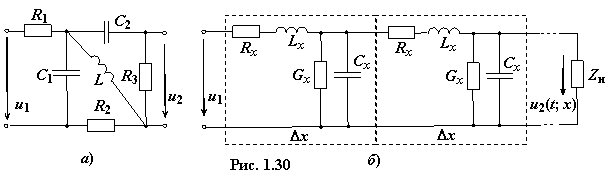

По характеру изменения ЭДС Е
и тока J источников энергии электрические цепи разделяют на следующие виды:
• цепи п о с т о я н н о г о тока;
• цепи с и н у с о и д а л ь н о г о тока (в том числе однофазные, трёхфазные и многофазные);
• цепи н е с и н у с о и д а л ь н о г о тока (периодического или непериодического);
• цепи с различным характером изменения ЭДС Е и тока J источников энергии.
Кроме этого, различают л и н е й н ы е,
н е л и н е й н ы е и п а р а м е т р и ч е с к и е цепи. В линейной цепи значения параметров R (или G), L и C пассивных элементов не зависят от величины и направления токов и напряжений; напряжение и ток в каждом элементе связаны между собой линейным уравнением – алгебраическим или дифференциальным:
Применительно к активным элементам условием линейности является независимость значения ЭДС Еk источника напряжения от протекающего
через него тока и тока Jk источника тока от напряжения на его полюсах (зажимах). Схемы линейных электрических цепей описываются линейными дифференциальными уравнениями с постоянными коэффициентами.
В нелинейной электрической цепи электрические напряжения и электрические токи, либо электрические токи и магнитные потокосцепления, либо электрические заряды и электрические напряжения хотя бы в одном пассивном или активном элементе связаны друг с другом нелинейными зависимостями. Нередко эти зависимости представляют в виде графиков или таблиц. Электромагнитные процессы в нелинейных цепях описываются нелинейными дифференциальными уравнениями.
В параметрической электрической
цепи параметр R, L или С хотя бы одного элемента зависит от времени. Схемы параметрических цепей описываются дифференциальными уравнениями с переменными во времени коэффициентами.
Выделяют также цепи с с о с р е д о т о ч е н н ы м и параметрами и цепи с р а с п р е д е л ё н н ы м и параметрами
В электрической цепи с сосредоточенными параметрами активные сопротивления, индуктивности и электрические ёмкости элементов считают сосредоточенными на отдельных участках этой цепи. Цепь представляет собой совокупность самостоятельно существующих элементов (рис. 1.30а). На входе такой цепи длина волны электромагнитных колебаний значительно больше размеров элементов и всей цепи. Так, при частоте сигнала f = 50 Гц длина волны λ ≈ с0 / f = 3·108/50 = 6 км, а при частоте f = 1 МГц, λ ≈ 300 м. Для описания такой цепи используют математический аппарат теории цепей.

В цепях с распределёнными параметрами (рис. 1.30б) электрические сопротивления, проводимости, индуктивности и электрические ёмкости распределены вдоль этой цепи, а длина волны входных электромагнитных колебаний соизмерима с размерами исследуемого устройства или его элементов; при этом ток в пределах ветви и её элементов изменяется от одного сечения к другому, т.е. ik = ƒ(t; x), где х − длина ветви (элемента).
Так, при частоте f = 30 ГГц длина волны
λ ≈
При значительном увеличении частоты сигнала практически любая цепь становится «длинной» по отношению к длине волны. При описании такой цепи используют математический аппарат теории электромагнитного поля.